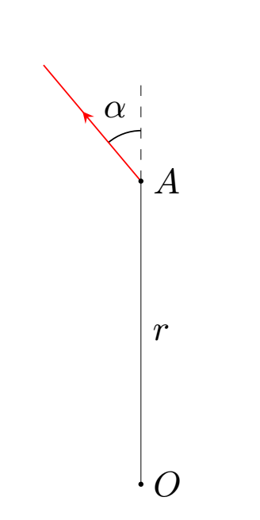
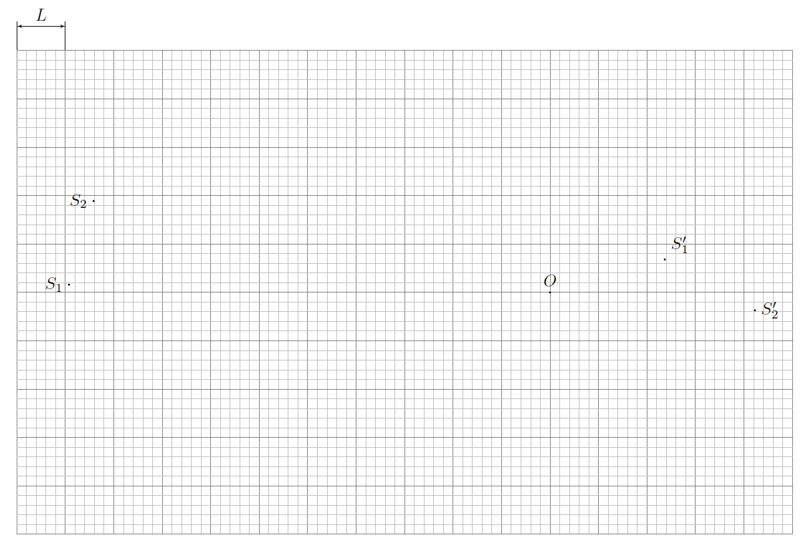
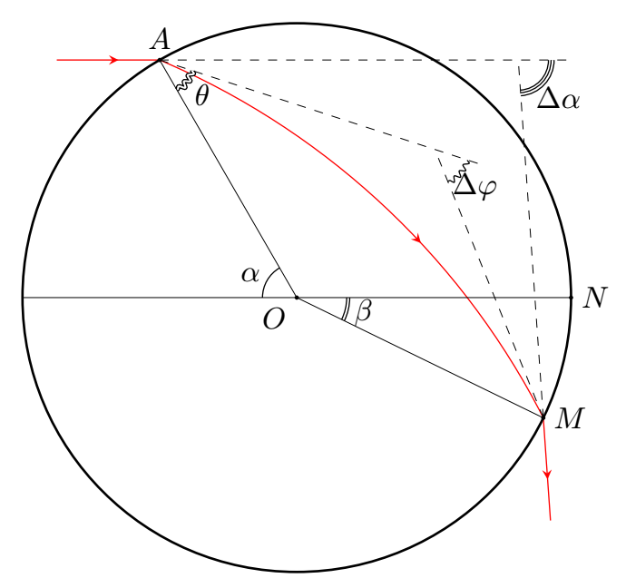
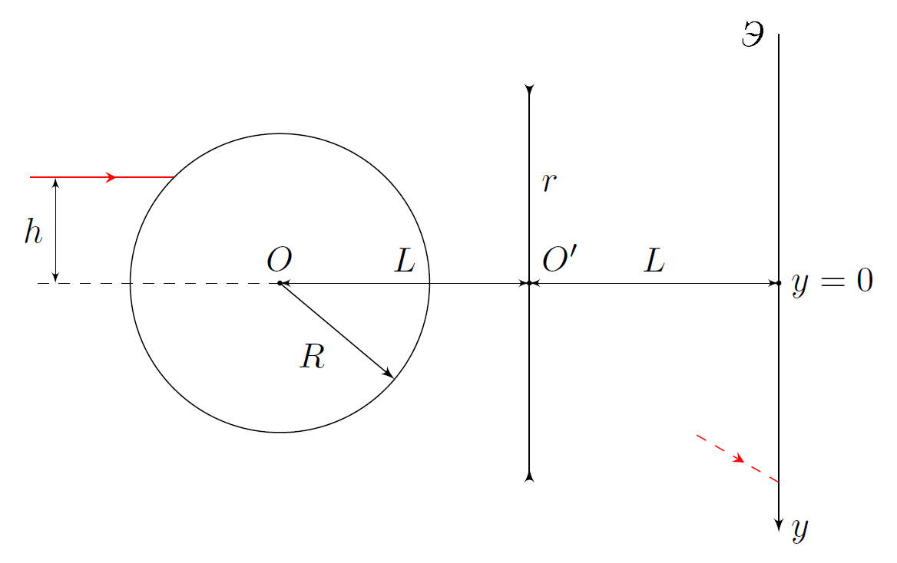
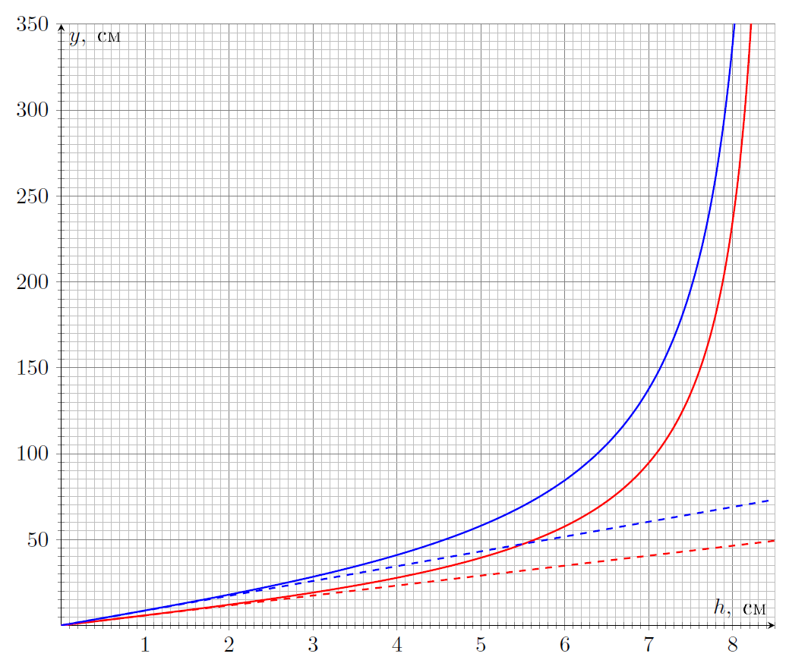

Y22 (2022) — English translation
A stigmatic image is an image in which each point corresponds to exactly one point of the depicted object. The optical system that forms a stigmatic image of a three-dimensional region is called absolute. To form a stigmatic image, it is necessary that the rays emitted by each point of the optical object, after passing through the optical system, intersect exactly at one point. As a consequence, in such systems there are no phenomena of aberration and diffraction of light. An example of an absolute optical system is Maxwell's fisheye, which is an inhomogeneous spherically symmetrical medium. In this task, you will first describe the optical parameters of the Fisheye and then analyze the images obtained using the system.
First, let us consider a medium with an arbitrary dependence $n(r)$. Let us denote the center of the medium as point $O$, and the point of the ray trajectory as $A$, and $OA=r$. We also introduce the angle $\alpha$ between the wave vector of the beam $\vec{k}$ and the vector $\overrightarrow{OA}$.

Maxwell's fisheye has the following property: any ray emitted at some point moves along a line of constant curvature.
In 1905, Robert Wood implemented the idea of a “Fish Eye”, which used a ball of radius $R$, the refractive index $n$ of the substance of which depended on the distance $r$ to the center of the ball according to the law: $$n(r)=\displaystyle\frac{2}{1+\left(\displaystyle\frac{r}{R}\right)^2} $$ В этой части задачи вам предлагается исследовать изображения точечных источников света на поверхности «Рыбьего глаза» в системе, состоящей из него и идеальной собирающей линзы.
На поверхности «Рыбьего глаза» расположены два точечных источника света. На рисунке, приведённом на миллиметровой бумаге, показаны положения точечных источников света $S_1$ и $S_2$, их изображений в системе, состоящей из «Рыбьего глаза» и идеальной собирающей линзы $S'_1$ и $S'_2$ (причём неизвестно, соответствуют ли источник и изображение с одинаковыми индексами друг другу), а также главного оптического центра линзы $O$. Рисунок приведён в некотором масштабе, $L=10~\text{cm}$ is the length of the side of a square cell. The fisheye is located entirely behind the focal plane of the lens.

In this part of the problem you will describe the Fisheye as a lens in an optical system. In all points of this part of the problem, work in paraxial approximation. Consider a ball of radius $R$, the refractive index of the substance $n$ depends on the distance $r$ to its center according to the law: $$n(r)=\displaystyle\frac{n_1}{1+\left(\displaystyle\frac{r}{a}\right)^2}\qquad n_1\geq{1+\left(\displaystyle\frac{R}{a}\right)^2} $$ Напомним, что оптическим центром оптической системы (если он существует) называется такая точка $O$, что любой луч, проходящий через неё, не преломляется и не смещается. Для «Рыбьего глаза» такой точкой является его центр. Фокусным расстоянием $F$ оптической системы называется расстояние между её оптическим центром $O$ и точкой фокусировки $F'$ параллельного пучка лучей, проходящих вблизи оптического центра системы, т.е $F=OF'$.
Рассмотрим луч, падающий на «Рыбий глаз» с углом падения $\alpha\ll{1}$. Обозначим углы так, как показано на рисунке: 1) $\alpha$ – угол падения луча; 2) $\thet a$ – угол преломления луча; 3) $\Delta\varphi$ – угол поворота вектора скорости луча при движении внутри «рыбьего глаза»; 4) $\Delta\alpha$ – полный угол поворота вектора скорости луча; 5) $\beta=\angle{NOM}$ – угол, характеризующий точку, в которой луч покидает «рыбий глаз». Далее, если точка фокусировки $F'$ находится левее точки $O$, We will consider the “Fisheye” to be a diverging lens, and if to the right – a converging lens.

In this part of the problem, the following optical system is analyzed: On the main optical axis of an ideal thin lens of a certain radius $r$ there is a center $O$ of a “Fisheye” of radius $R=15~\text{см}$ at a distance $L=20~\text{см}$ from the center of the lens $O'$. Behind the lens at the same distance $L$ from it there is a flat screen. A very narrow laser beam of light located at a height $h$ above the main optical axis of the lens is directed at the fish eye parallel to the main optical axis of the lens, which, after passing through the optical system, hits the screen. We denote the focal lengths of the lens and the fisheye as $F$ and $F_0$, respectively. Recall that the focal length $F$ is an algebraic quantity that is positive for a converging lens and negative for a diverging lens.

The graph shows two dependences of the coordinate $y$ of the laser beam on the screen on the height $h$ of the laser above the main optical axis. The blue (upper) dependence is obtained when the laser beam passes through the lens, and the red (lower) dependence is obtained if the laser beam falls directly on the screen, bypassing the lens. In the experiment with a lens of radius $r$, a jump in $y$ at $h_1=2.10~\text{см}$ is observed, as well as a tendency of $y$ to infinity at $h_2=8.66~\text{см}$. The derivative $\cfrac{dy}{dh}$ at zero in the lens experiment turned out to be equal to $k_1=8.62$. The lens was removed and the experiment was repeated, which is entirely reflected by the lower (red) dependence. The derivative $\displaystyle\frac{dy}{dh}$ at zero in the experiment without a lens turned out to be equal to $k_2=5.80$. In all points of this part of the problem, the designation of angles is the same as that introduced in part $\textbf{C}$, i.e. $\Delta{\alpha}=k\alpha$.

At points $\textbf{D1-D5}$ work in paraxial approximation.
The proportionality factor $k$ is not sufficient to determine the fisheye parameters $n_1$ and $a$. From the asymptotic tendency of $y$ to infinity at the value of $h=h_2$ we obtain the second equation connecting $n_1$ and $a$. To do this, it is necessary to accurately describe the trajectory of the ray in the Fisheye. The angle of incidence of the beam at the value $h=h_2$ will be denoted by $\alpha_0$.
The equation you received cannot be solved on the calculator provided to you, since it cannot be entered entirely into it. However, angles $\theta$ and $\Delta{\varphi}$ can be found using a calculator.
Source: https://pho.rs/p/504